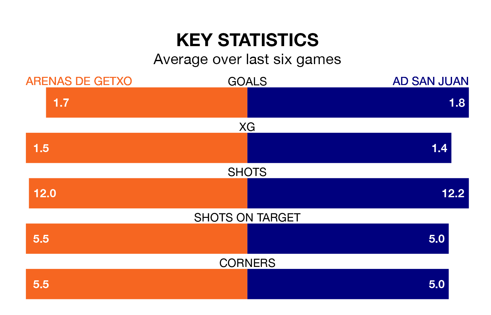

Arenas de Getxo host AD San Juan on Sunday at Estadio Municipal de Gobela in the Segunda División RFEF Group 2.
In their last league match, on April 28, Arenas de Getxo beat UD Mutilvera 4-1 away.
San Juan lost, 1-0 at home against Utebo.
San Juan are 15th in the table after 33 games, of which they have won eight and drawn eight, earning 32 points.
Arenas de Getxo are three places ahead of the away side in 12th, with nine wins and 13 draws putting them on 40 points.
With 28 goals in 33 games so far this season, San Juan are scoring at below the league average rate with 0.8 goals per game. And they are conceding more than average, letting in 46 goals at a rate of 1.4 per game.
The hosts are also below average scorers, with 1.0 goal per game, compared to a league average of 1.1. They have conceded 1.1 goals per game.
In the last five years, Arenas de Getxo and San Juan have played each other on five occasions. San Juan won two of them and they drew three times.
On average, Arenas de Getxo scored 0.6 goals and San Juan 1.0 in those matches.
Their last meeting was on January 7, when they played out a 1-1 draw.
Arenas de Getxo are in reasonable form in the Segunda División RFEF Group 2, with three wins and two draws from their last six games.
With four wins and two losses over that period, San Juan's form is slightly better – they have taken 12 points from 18, compared to Arenas de Getxo's 11.
Updated: 12:00 (UTC), 02/05/24